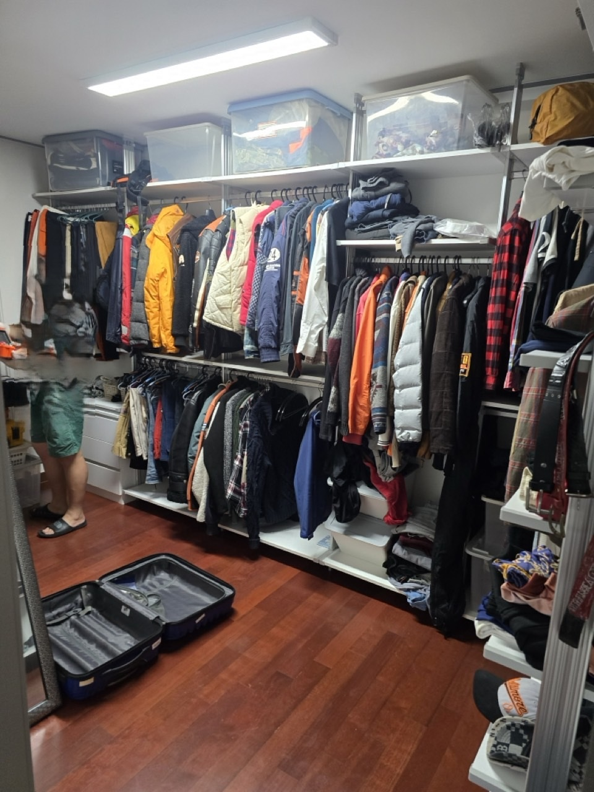
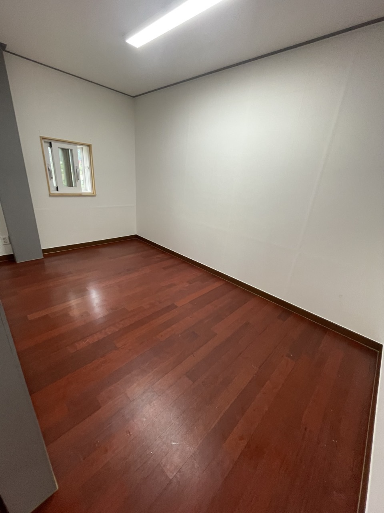

행정동은 달라도 경계 주택은 주소 기준으로 동구동 또는 인창동 페이지 내용에 맞춰 안내합니다. 사노동 주소면 주택형 동선으로 계산합니다.
동구동 · 법정동 사노동
동구동·사노동
동구동·사노동
주택형 유품정리 상담
동구동은 면적이 넓은 구리 북부 행정동입니다. 법정동 사노동과 인창 일부가 포함되어, 아파트보다 단독·다세대·창고형 공간이 많습니다. 왕숙천을 따라 길이 꺾이는 집도 있어 차량 크기를 먼저 정합니다. 구리 올바른정리는 동구동 유품정리를 마당·창고까지 포함해 보고, 장기 방치는 쓰레기집청소로 진행합니다.
SERVICE
구리시 동구동에서 맡기는 작업
동구동은 빈집 매매 전 공실 만들기와 창고 적치 철거 문의가 잦습니다.
유품정리
사노동 주택 유품 정리
안방·다락·외부 창고에 유품이 흩어져 있는 집이 많습니다. 농기구·기름통처럼 생활폐기물과 섞인 물건은 품목을 나눠 처리합니다. 남길 제사 도구와 사진은 작업 전 한곳에 모아 주세요.
쓰레기집청소
동구동 빈집·적치 상차
수년 비운 집은 마당에 고철과 장판이 쌓여 있는 경우가 있습니다. 도로 폭이 좁으면 골목 입구에서 소형 차량으로 나눠 나릅니다. 악취가 있으면 특수청소를 먼저 할지 함께 판단합니다.
PRICE
동구동 비용이 달라지는 지점
동구동은 평수보다 창고 수와 골목 운반 횟수가 금액을 바꿉니다.
* 부가세 별도 · 시작가이며 현장 확인 후 확정
유품정리
45만원 부터~
주택 유품은 방+창고 기준으로 45만원부터 산정합니다.
고독사 특수청소
80만원 부터~
장기간 닫아 둔 방의 오염은 80만원부터 별도입니다.
쓰레기집·일반폐기물
30만원 부터~
마당 고철·목재가 많으면 30만원 시작가에 상차 횟수가 더해집니다.
GUIDE
동구동 유품정리는 왜 아파트와 다르게 보나요?
사노동은 실내면적 밖에 창고와 처마 밑 적치가 작업량을 키웁니다.
동구동에서 유품정리가 필요한 집은 어떤 형태인가요?
사노동 단독주택은 안채와 바깥채, 창고에 물건이 나뉘어 있습니다. 가족이 서울·남양주에 있어 주말에만 분류하는 경우가 많아, 1차는 보관 물건만 표시하고 2차에 반출하는 일정도 가능합니다. 유품정리는 상속 서류가 섞이지 않게 방 단위로 진행합니다.
왕숙천 근처 골목은 트럭이 들어가나요?
집마다 다릅니다. 동구동은 왕숙천·용암천 방향 이면도로가 좁아 1톤 차량이 회전하지 못하는 지점이 있습니다. 그 경우 입구에 본 차량을 두고 손수레·소형 용달로 나눕니다. 이 과정이 쓰레기집청소 인건비에 반영됩니다.
동구동 쓰레기집청소와 철거가 헷갈릴 때는요?
벽체·지붕을 손대는 일은 철거이고, 우리는 내부 적치물·가구·생활폐기물 반출입니다. 빈집 매매 전이라면 보통 반출만으로 공실이 됩니다. 슬레이트나 고정 선반은 현장 확인 후 가능 여부를 말씀드립니다.
사노동 농가형 공간도 접수되나요?
접수됩니다. 비료포대, 호스, 고가구가 섞여 있으면 품목별로 나눠 상차합니다. 구리시 생활폐기물로 가기 어려운 품목은 별도 안내합니다.
동구동 견적을 빨리 받는 방법은?
대문에서 찍은 도로 사진, 마당, 가장 쌓인 방 한 장, 창고 내부 한 장이면 됩니다. 전화 010-4393-2414로 동구동·사노동이라고 말씀해 주시면 주택형 동선으로 바로 잡습니다.
PROCESS
동구동 작업 순서
동구동은 차량이 대문 앞까지 가는지를 최우선으로 봅니다.
STEP 01
진입로 측정도로 폭과 회전 반경을 보고 본차·보조차를 나눕니다.
STEP 02
창고와 안채 구분유품이 있는 방과 고철 창고를 동선이 꼬이지 않게 순서로 잡습니다.
STEP 03
마당 상차내부 비운 뒤 마당 적치물을 마지막에 실어 재오염을 막습니다.



FAQ
동구동에서 자주 묻는 질문
검색·AI 답변에 쓰일 수 있도록 이 지역 기준으로 짧게 정리했습니다.
고철·목재·생활폐기물이 섞여 있으면 쓰레기집청소 또는 가정폐기물 반출로 접수합니다. 양에 따라 품목을 나눕니다.
손대지 않을 품목을 미리 표시해 주시면 그 구역은 작업에서 제외합니다. 이동이 필요하면 별도 상자에 담아 드립니다.
마당 상차는 비에 취약합니다. 실내 분류는 가능하고, 상차는 날을 옮기는 편이 안전합니다.